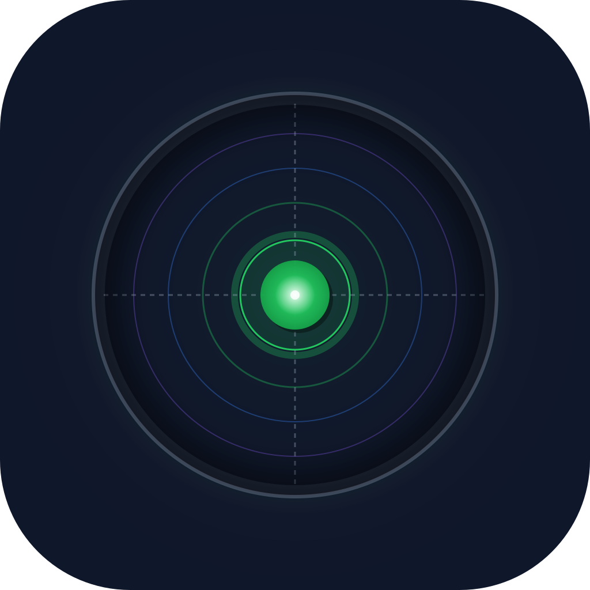

🎯 FlatFinder Icon Comparison
Original vs. Centered Highlight
Original Version
Off-center highlight for 3D realism
✅ Pros:
- More realistic 3D glass effect
- Follows standard design conventions
- Looks polished and professional
⚠️ Cons:
- Could be confusing - "Is the bubble centered?"
- Highlight draws eye away from center
- Less clear at small sizes
✨ Centered Highlight ✨
Centered glow for instant clarity

✅ Pros:
- Crystal clear - bubble is obviously centered
- Reinforces "level/found" concept instantly
- No visual ambiguity
- Clearer at small sizes
- Aligns with crosshair center
⚠️ Cons:
- Slightly less 3D depth
- Less conventional design approach
Recommendation: Centered Highlight
Your boss is absolutely right! For an app icon, clarity beats realism every time.
Why Centered Wins:
The icon's job is to instantly communicate "this app finds your level spot."
The centered highlight makes it immediately obvious that the bubble is perfectly centered,
reinforcing the core value proposition at a glance.
At small sizes (home screen, notifications), the centered version removes any doubt. Users will instantly recognize: "Bubble centered = mission accomplished."
✓ Go with the centered version!
📱 Icon Design Best Practice
- Clarity > Realism: App icons need instant recognition at 60×60px or smaller
- Avoid Ambiguity: Users should understand the icon in <1 second
- Test at Small Sizes: If it's not clear at 64px, it won't work
- Centered = Success: For leveling apps, centered bubble = achieved goal